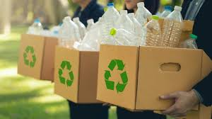
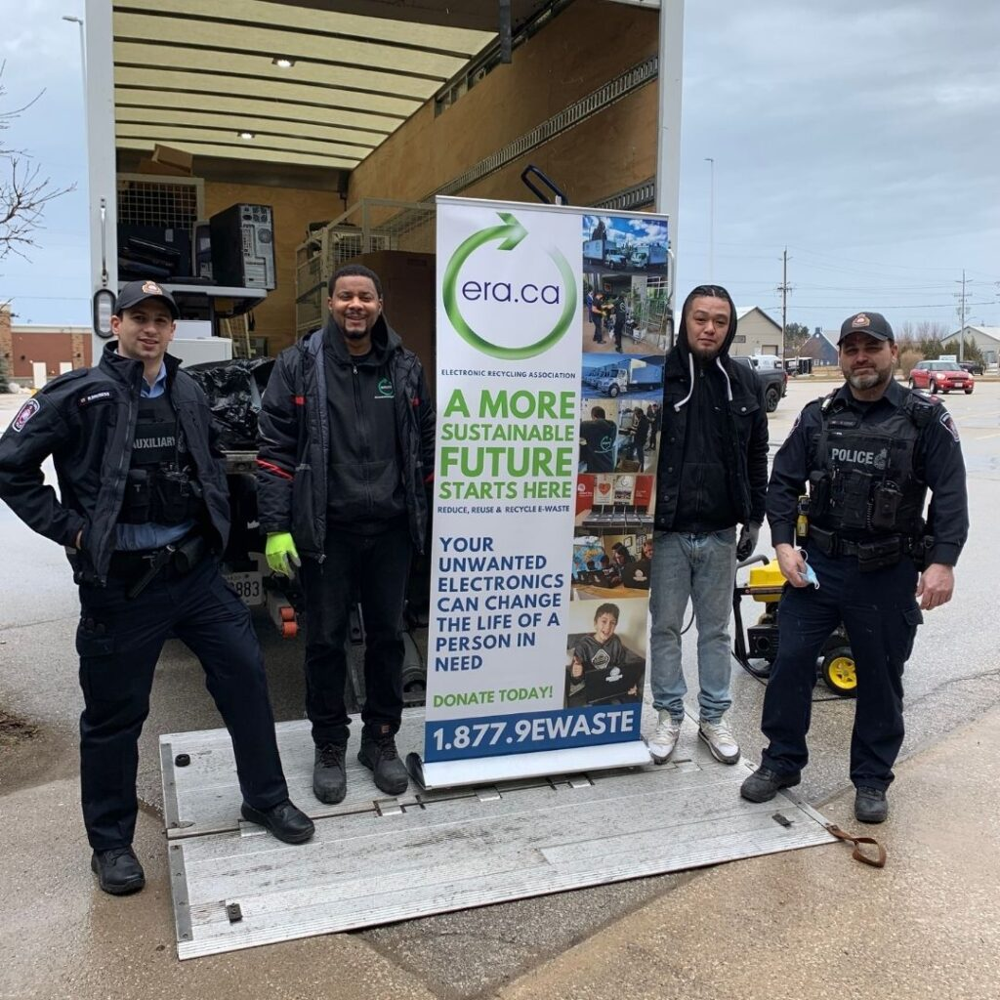
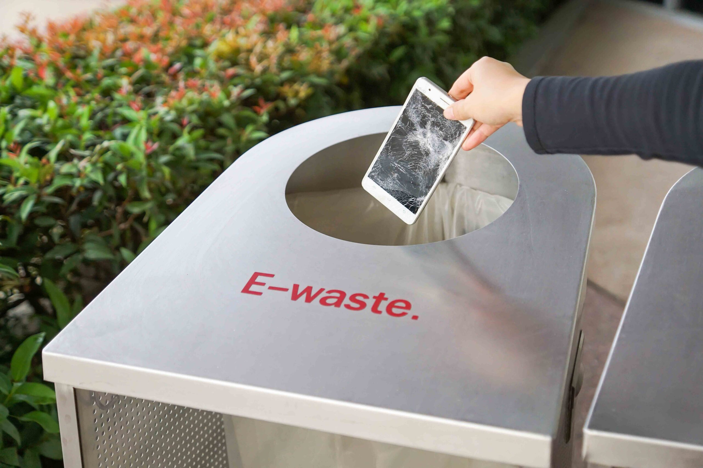
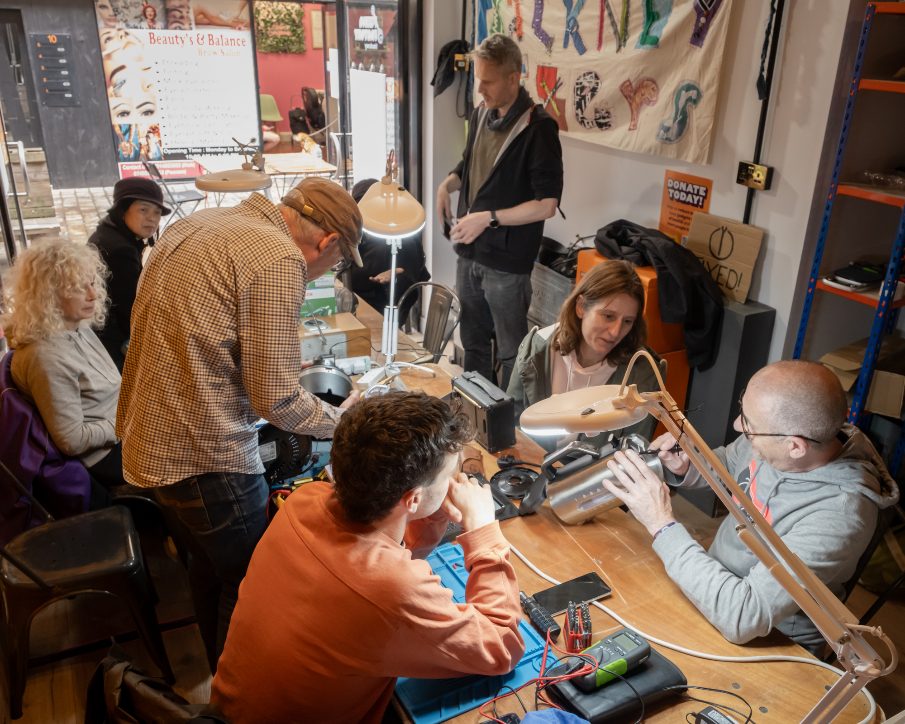

Computer Recycling & Reuse
How Computer Recycling & Reuse Reduces E-Waste
1. Recycling Programs
Material recovery through specialized facilities can extract metals like gold,
copper, and silver, and reusable plastics and glass. Using reusable cling film
alternatives also has the potential to reduce greenhouse gas emissions by 35%.
Electronics often contain harmful chemicals, such as lead, mercury and cadmium,
which are not an issue when the products are in use, but when the items are
disposed of and start to break down, these chemicals can leach into the environment.

2. Donation Drives
- Donating devices to students, low-income families and non-profits
- Supporting students without access to devices
- Maximise lifespan of devices that would be otherwise discarded
- Working with proper e-waste partners can ensure harmful substances are
kept out of landfills
3. Refurbishment Initiatives
Electronic Recycling Association
Extended Producer Responsibility
The Restart Project



A non-profit that collects and refurbishes used IT equipment to donate to local charities, schools and other individuals in need
Ontario regulation requires producers to ensure collected e-waste is properly disposed of
An initiative that helps people learn to repair their electronics to extend product lifespan
Computers & Environment